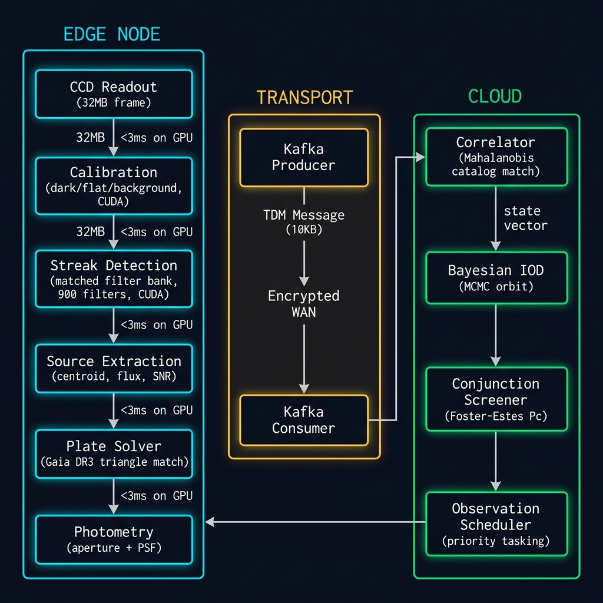

📐 Edge-to-Cloud Data Flow Architecture

FIG 1 — SGSN DATA FLOW ARCHITECTURE · Edge Node → CUDA Pipeline → Kafka Transport → Cloud Catalog
CCD Frame (32MB) → Calibration → Streak Detection → Source Extraction → Plate Solve → TDM (10KB) → Cloud Ingest
CCD Frame (32MB) → Calibration → Streak Detection → Source Extraction → Plate Solve → TDM (10KB) → Cloud Ingest
ARCHITECTURE: Each site reduces raw imagery (32MB/frame at 1Hz) to structured Tracking Data Messages (10KB) using the on-site NVIDIA Jetson AGX Orin GPU. Only derived measurements traverse the WAN — a 3,200:1 data compression ratio that enables the network to operate over Starlink or cellular uplinks.
🔌 REST API Endpoints (Per Site)
BASE URL:
Replace
https://beacon-api.slingshot.cloud/api/v2/sites/{site_slug}Replace
{site_slug} with the lowercase site code (e.g., co1, tx, au1, hi). Auth: Bearer token via Slingshot Beacon SSO.
| Health Check | GET /api/v2/sites/{slug}/health — Returns uptime, GPU temp, dome state, weather safety |
| Telemetry Stream | GET /api/v2/sites/{slug}/telemetry?interval=5s — SSE stream of real-time site telemetry |
| Submit TDM | POST /api/v2/sites/{slug}/tdm — Ingest Tracking Data Message (CCSDS TDM/JSON) |
| Queue Status | GET /api/v2/sites/{slug}/queue — Pending observation tasks with priority |
| Task Schedule | PUT /api/v2/sites/{slug}/schedule — Push new observation schedule to edge node |
| Calibration Data | GET /api/v2/sites/{slug}/calibration — Latest dark/flat/bias frames metadata |
| Edge Logs | GET /api/v2/sites/{slug}/logs?tail=500 — Most recent pipeline log entries |
| Detection History | GET /api/v2/sites/{slug}/detections?hours=24 — Recent detection catalog |
| Force Reboot | POST /api/v2/sites/{slug}/reboot — Requires Tier 3 auth. Triggers safe shutdown + restart |
⚙️ Edge Pipeline Configuration
# /opt/slingshot/config/site.yaml — Standard edge node configuration
site:
id: SLING-NUM-{CODE}
name: {Site Name}
lat: {latitude}
lon: {longitude}
edge_compute:
platform: jetson_agx_orin_64gb
cuda_version: 12.2
tensorrt: 8.6.1
jetpack: 6.0
gpu_budget_pct: 80
pipeline:
streak_detect:
model: pinn_streak_v3.2.engine
filter_bank: J2-J6_matched
min_snr: 3.5
max_streak_length_px: 2048
photometry:
aperture_radii: [3, 5, 7]
catalog: gaia_dr3
zeropoint_band: V
transport:
kafka:
brokers: [beacon-ingest-01.slingshot.cloud:9092]
topic: site.{slug}.tdm
compression: zstd
batch_size: 16384
linger_ms: 100
camera:
model: ZWO_ASI6200MM_Pro
interface: USB3.0
readout_mode: low_noise
cooling_setpoint_c: -20
gain: 100
binning: 1x1
📦 Key Python / CUDA Modules
streak_detect.cu | PINN-accelerated matched-filter streak detection. CUDA kernel uses J2-J6 perturbation bank for LEO rate-matching. 900 filter orientations, <3ms per frame on Orin. |
calibration.cu | GPU-accelerated CCD calibration: bias subtraction, dark current, flat fielding, background estimation. Processes 9576×6388 frames in <2ms. |
plate_solver.cpp | Astrometric plate solving via Gaia DR3 triangle matching. Pixel→RA/Dec WCS transform with SIP distortion model. <50ms cold start. |
photometry.cpp | Aperture and PSF photometry with Tycho-2 zeropoint calibration. Outputs instrumental and calibrated magnitudes (BVRI). |
bayesian_iod.py | Initial Orbit Determination from 3+ tracklets. Gauss method + UKF refinement. Outputs state vector in TEME frame. |
catalog_lifecycle.py | UCT → TENTATIVE → CATALOGED state machine. Mahalanobis distance correlation with existing catalog objects. |
kafka_transport.py | Edge→Cloud Kafka producer. Protobuf TDMs with zstd compression. Offline queueing with SQLite fallback. |
site_monitor.py | Health daemon: GPU temp/util, dome state, weather, queue depth. JSON telemetry broadcast every 5s. |
scheduler.py | Priority-weighted observation scheduler. Beacon targets + horizon mask + weather forecast integration. |
ascom_hal.py | Hardware Abstraction Layer for mount, camera, dome, focuser, filter wheel. ASCOM Alpaca/COM interface with simulation mode. |
🛠️ SSH & Debug Commands
| SSH Access | ssh edge@{slug}.slingshot.internal -p 2222 |
| GPU Status | jetson_health --diag --json |
| Pipeline Status | systemctl status slingshot-pipeline |
| Restart Pipeline | sudo systemctl restart slingshot-pipeline |
| Tail Detections | journalctl -u slingshot-pipeline -f --output=json |
| Kafka Lag | kafka-consumer-groups --describe --group site-{slug} |
| GPU Utilization | tegrastats --interval 1000 |
| Camera Test | python3 -m ascom_hal --self-test |
| Dark Calibration | cam_cal --darks --count=100 --output=/opt/slingshot/cal/ |
| Force TDM Flush | kafka_transport.py --flush-queue --force |
⚠ CAUTION: Commands marked in red are destructive or require elevated privileges. Always verify the site is not mid-observation before restarting services. Check queue depth first:
GET /api/v2/sites/{slug}/queue
🚀 Deployment Workflow
| 1. Build | cmake --build build/ --target streak_detect -- -j$(nproc) — Cross-compile for sm_87 (Orin) on x86 host |
| 2. Package | dpkg-deb --build slingshot-edge_3.2.1_arm64 — Debian package for Jetson |
| 3. Stage | scp slingshot-edge_3.2.1_arm64.deb edge@{slug}.slingshot.internal:/tmp/ |
| 4. Pre-flight | ssh edge@{slug} "slingshot-preflight --check-queue --check-weather" |
| 5. Deploy | ssh edge@{slug} "sudo dpkg -i /tmp/slingshot-edge_3.2.1_arm64.deb" |
| 6. Verify | ssh edge@{slug} "slingshot-pipeline --self-test --timeout=30" |
| 7. Rollback | ssh edge@{slug} "sudo apt install slingshot-edge=3.2.0" — Downgrade to previous version |
CI/CD: Production deploys are staged through Beacon's fleet management portal. Manual SSH deploys are only for emergency hotfixes. All packages are signed with the Slingshot GPG key and verified on the edge node before installation.
🎯 SentinelForge Module Alignment
| orbit_propagator.py | Kepler + J2-J6 secular propagation. Feeds the observation scheduler's pass prediction engine. |
| conjunction_screener.py | Foster-Estes collision probability. Ingests fused orbits from multi_sensor_fusion for Pc calculation. |
| multi_sensor_fusion.py | Extended Kalman Filter fusing observations from multiple sites into unified state estimates. |
| light_curve_analyzer.py | FFT spin-period estimation + GNN embedding for object characterization and identification. |
| graph_associator.py | GNN-based tracklet association. Links uncorrelated tracks across sites using graph neural networks. |
| koopman_propagator.py | EDMD linearized propagation for fast covariance forecasting in conjunction screening. |
| cislunar_dynamics.py | CR3BP Lagrange points and manifold computation for cislunar domain awareness. |
| data_assimilation_engine.py | Global catalog assimilation — merges observations from all 20 sites into unified catalog state. |
⌨️ Antigravity IDE — Integrated Terminal
IN-SITU DEVELOPMENT: Embedded command-line interface for live code inspection and modification. Supports
ls, cat, python, git, pytest, nano, and pipeline commands. Type help for available commands.
Antigravity Terminal — sentinelforge/
⌫
⬜
edge@sentinelforge:~/sentinelforge$